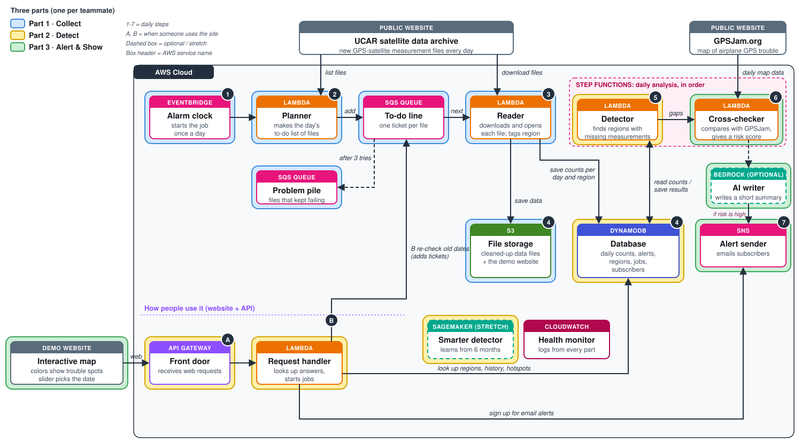

Northwestern CS 310 · Scalable Software Architectures
GNSS Interference Watch
A serverless AWS class project that tracks GNSS interference from public UCAR radio-occultation data and GPSJam aircraft reports.
Every day, the service downloads public satellite measurements, notices places where those measurements suddenly go missing (a sign of GPS jamming), double-checks those places against airplane GPS-trouble maps, and can email an alert and show the result on a map.
github.com/chas3stockwell/gnss-interference-watch
Class project proposal by Chase Stockwell, November 2026, written for a three-person group. This page summarizes that design. It uses public data only.
The problem
GPS is the system that tells a phone, a plane, or a ship where it is, by listening to weak radio signals from satellites. GNSS is the general name for satellite navigation, including GPS and Europe's Galileo.
Because the signals are weak, they are easy to interfere with:
- Jamming blasts radio noise so a receiver cannot hear the satellites.
- Spoofing sends fake signals so a receiver thinks it is somewhere else.
Both show up near conflict zones. Pilots lose GPS, ships report the wrong position, and weather data can suffer. Finding the hotspots is still mostly manual. This project is a design for automating that.
The clue is missing satellite measurements. Some satellites measure the atmosphere by watching a GNSS signal graze the air as a navigation satellite sets behind the Earth. That technique is radio occultation. Each measurement is a profile: a column of temperature and moisture at one place and time. UCAR publishes new profiles every day. Those satellites need a clean GNSS signal too. Where the signal is jammed, fewer profiles arrive.
A second public source, GPSJam.org, maps GPS trouble reported by airplanes. Planes broadcast position and GPS quality through ADS-B. GPSJam marks a map cell "high" when more than 10% of planes there had degraded GPS. It cannot tell jamming from spoofing, and it only sees where planes fly. Two independent sources agreeing is stronger evidence than one.
How a day runs
- Wake up. Once a day, a timer starts the job.
- Collect. Download that day's new files from UCAR and record where and when each profile was measured.
- Count. Count profiles in each region the project watches, per provider, per day.
- Detect. Compare each count with what is normal for that region. A large, sudden drop is a possible jamming hotspot.
- Check and tell. Compare flagged regions with GPSJam, assign a risk score, email subscribers when the risk is high, and show the results on a web map.
Architecture
- Part 1 · Collect
- Part 2 · Detect
- Part 3 · Alert and show


Three parts, one per teammate
The course asks for at least three real server operations, not only saving or fetching a file. Each teammate owns one. They meet at agreed data formats, so each part can be built and tested on its own.
Part 1 · Collect
Every morning, find the day's new UCAR files, download them, open them, and record each profile's latitude, longitude, time, and quality. EventBridge starts a Planner Lambda. The planner puts one SQS ticket per file, so many Reader Lambdas can work at once. A dead-letter queue holds tickets that still fail after three tries, instead of stopping the whole job. Readers run as a container image because the scientific libraries (netCDF and BUFR) are large. Cleaned rows land in S3 as Parquet files. One count per region, provider, and day lands in DynamoDB.
Part 2 · Detect
Compare each region's daily count with its normal rate. Two numbers matter. The density ratio is profiles received divided by profiles expected, using that provider's usual rate at that latitude. A ratio of 1 is normal. The rolling z-score says how far today is from the region's recent average, in ordinary day-to-day variation. A region is flagged when the ratio is low and the drop is unusual for that place. Small regions get smoothed over several days. This part also owns the database and the API the map calls: regions, a time series, and a way to start a backfill for an older date range.
Part 3 · Alert and show
Check flagged regions against GPSJam. Measure how much of the region is marked "high," and whether profile gaps and airplane reports rise and fall together. Combine the profile drop, the GPSJam overlap, and how many days the problem has lasted into one risk score: low, medium, or high. If a region crosses the alert level, SNS emails subscribers. An optional Bedrock step can write a two-sentence summary. The demo map is a simple Leaflet page hosted on S3. It colors each region, has a date slider, and shows the risk details on click.
What it is built from
| Service | What it does here | Part |
|---|---|---|
| EventBridge | Alarm clock that starts the daily job. | 1 · Collect |
| Lambda | Short programs that run only when called: Planner, Reader, Detector, Cross-checker, and the API request handler. | All |
| SQS | One to-do ticket per data file, plus a problem pile for files that keep failing. | 1 · Collect |
| S3 | Cleaned profile files, and hosting for the demo map. | 1 and 3 |
| DynamoDB | Daily counts, flagged regions, jobs, and subscribers. | 2 · Detect |
| Step Functions | Runs the detector, then the cross-checker, in that order. | 2 and 3 |
| API Gateway | Front door for the public API the map and other tools call. | 2 and 3 |
| SNS | Emails subscribers when a region's risk is high. | 3 · Alert |
| CloudWatch | Logs, and an alarm if the problem pile grows. | All |
| Bedrock (optional) | Writes a short plain-English alert summary. | 3 · Alert |
| SageMaker (stretch) | A detector trained on a longer history, if the simple rules are not enough. | 2 · Detect |
Who it is for
The one-line problem statement from the proposal: operations teams learn about GPS interference late and by word of mouth. They need an automated, evidence-backed daily alert of where interference is happening.
- Airline and airport operations teams, who can warn pilots.
- Ship operators and maritime authorities.
- Defense and intelligence analysts.
- Weather centers that depend on radio-occultation data and need to know why measurements are missing.
The north-star metric is time from the start of interference to the alert. Supporting checks are the share of alerts that GPSJam confirms, and false alarms in quiet control regions.
The smallest useful version is the three parts above, a few hotspot regions, a few control regions, email alerts, and the map. Custom regions drawn on the map, the Bedrock summary, and the SageMaker detector are stretch work. Ship the daily alert first.
Scope notes
- A provider outage also lowers counts. The design compares control regions from the same provider on the same day, and it requires GPSJam agreement before it calls a risk "high."
- GPSJam is an independent public site. The plan is to download it once a day, cache it, and confirm the file format before depending on it.
- Daily files are large enough to matter, and a Lambda run has a time limit. One file per queue ticket keeps each run small.
Source and later build notes: chas3stockwell/gnss-interference-watch.